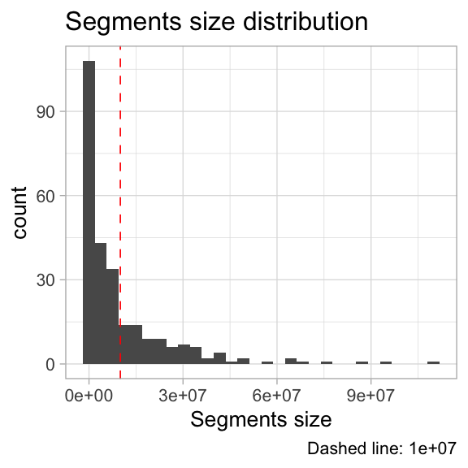
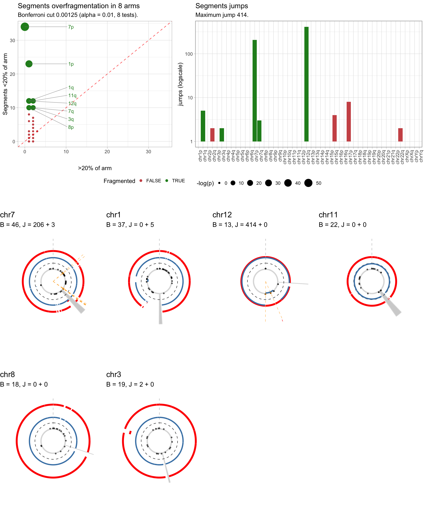
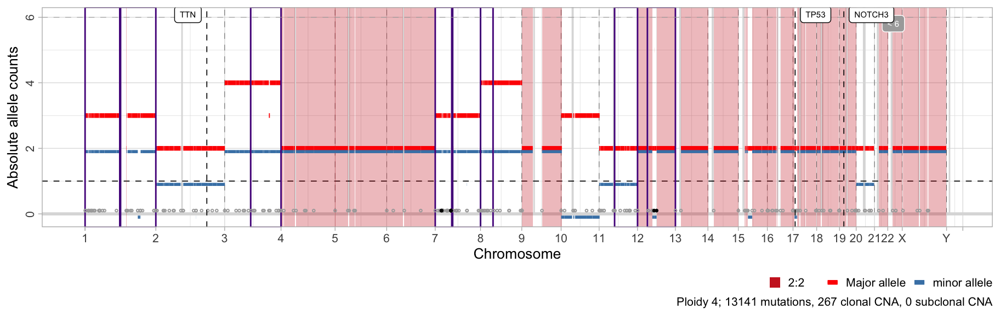
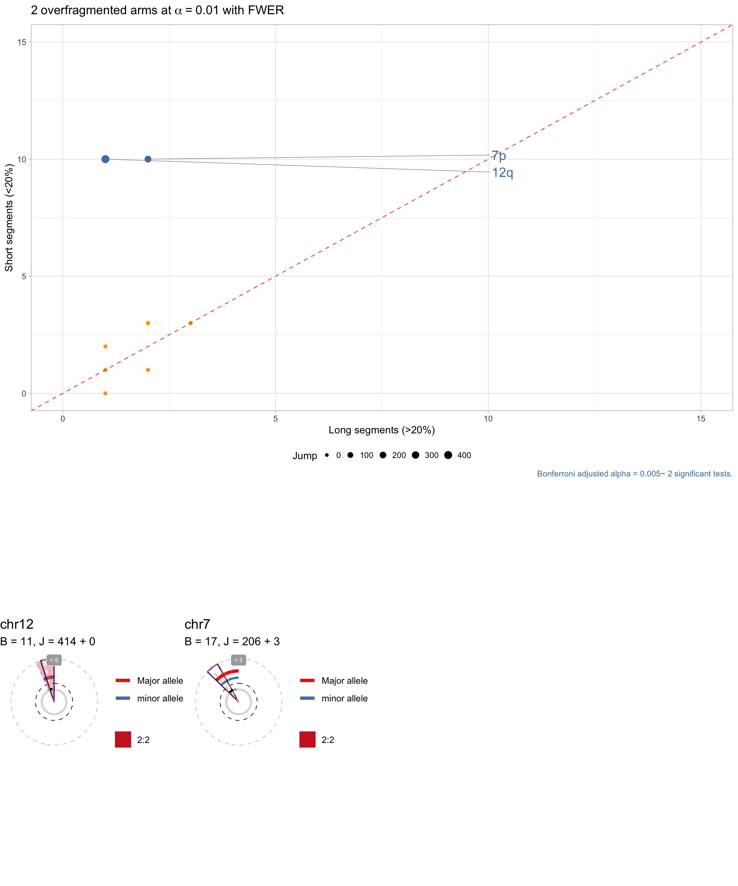

library(CNAqc)
#> ✓ Loading CNAqc, 'Copy Number Alteration quality check'. Support : <https://caravagn.github.io/CNAqc/>We work with the template dataset.
The fragmentation of a chromosome arm is assessed with a statistical test based on counting the size of the copy number segments mapping to the arm.

CNAqc counts, for every arm with lenght \(L\) nucleotides:
A one-sided Binomial test is used to compute a p-value for the null hypothesis of seeing \(n_s\) observations in \(n_l\) trials, assuming a Binomial success probability \(p = \delta > 0\). \(p\) represents a model where each segment length is equally likely (uniform distribution).
In this way the test accounts for the difference in lenghts of the chromsome arms; a p-value per arm is reported and adjusted for multiple hyoptheses (Bonferroni).
# Test with default parameters (small segments: < 20% of chromosome arm)
x = detect_arm_overfragmentation(x)
#> ℹ One-tailed Binomial test: 8 tests, alpha 0.01. Short segments: 0.2% of the reference arm.
#> ✓ chr7p, p = 1.71798691840001e-24 ~ 34 segments, 34 short.
#> ✓ chr1p, p = 1.62738995200002e-15 ~ 24 segments, 23 short.
#> ✓ chr11q, p = 2.4788992e-07 ~ 14 segments, 12 short.
#> ✓ chr1q, p = 4.34176000000001e-08 ~ 13 segments, 12 short.
#> ✓ chr12q, p = 4.34176000000001e-08 ~ 13 segments, 12 short.
#> ✓ chr3q, p = 4.52608e-06 ~ 12 segments, 10 short.
#> ✓ chr7q, p = 4.52608e-06 ~ 12 segments, 10 short.
#> ✓ chr8p, p = 9.21599999999998e-07 ~ 11 segments, 10 short.
#> ℹ 8 significantly overfragmented chromosome arms (alpha level 0.01).
print(x)
#> ── [ CNAqc ] n = 13141 mutations in 267 segments (267 clonal + 0 subclonal). Genome reference: GRCh38. ──────────────────
#>
#> 2:2 [n = 7478] ■■■■■■■■■■■■■■■■■■■■■■■■■■■ { chr19:15292495:15292496:G:A }
#> 4:2 [n = 1893] ■■■■■■■
#> 3:2 [n = 1625] ■■■■■■
#> 2:1 [n = 1563] ■■■■■■ { chr2:179431633:179431634:C:T }
#> 3:0 [n = 312] ■
#> ℹ Sample Purity: 89% ~ Ploidy: 4.
#> ℹ Mutations annotated have 3 drivers.
#> ✓ Arm-level fragmentation analysis: 8 segments overfragmented.You can produce a arm-level report for the fragmentation test, with:
\(J\) is the sum of the variation in total copy number profiles, evaluated among each pair of contiguous segments.
Significantly overfragmented arms with high \(J\) have a “scattered” copy number profile. Those with low \(J\) are more uniform, as they show little no copy number change, and can be possibly smoothed (see below).

Once available, these results appear in any call to plot_segments as annotated purple squares sorrounding the arms.
# Default plot has now segments
plot_segments(x)
#> Scale for 'fill' is already present. Adding another scale for 'fill', which
#> will replace the existing scale.
Smoothing is a good way to start cleaning up the fragmented sets of arms, as it merges segments that have no karyotype change, and are closer than a certain distance.
# Smooth with default parameters
x = smooth_segments(x)
#> ℹ Smoothing chr1: 37 segments.
#> [1-24] [27-30] [31-33] [34-37]
#> ℹ Smoothing chr10: 8 segments.
#> [1-2] [3-4] [5-8]
#> ℹ Smoothing chr11: 22 segments.
#> [1-7] [8-9] [10-22]
#> ℹ Smoothing chr12: 13 segments.
#> [2-3] [12-13]
#> ℹ Smoothing chr14: 2 segments.
#> [1-2]
#> ℹ Smoothing chr15: 9 segments.
#> [1-5] [7-9]
#> ℹ Smoothing chr16: 10 segments.
#> [1-6] [8-10]
#> ℹ Smoothing chr17: 10 segments.
#> [4-5] [6-7] [8-10]
#> ℹ Smoothing chr18: 8 segments.
#> [1-2] [3-8]
#> ℹ Smoothing chr19: 5 segments.
#> [2-5]
#> ℹ Smoothing chr2: 18 segments.
#> [1-8] [10-12] [14-18]
#> ℹ Smoothing chr20: 9 segments.
#> [1-3] [4-9]
#> ℹ Smoothing chr21: 2 segments.
#> [1-2]
#> ℹ Smoothing chr22: 3 segments.
#> ℹ Smoothing chr3: 19 segments.
#> [1-7] [8-13] [15-19]
#> ℹ Smoothing chr4: 8 segments.
#> [1-4] [5-8]
#> ℹ Smoothing chr5: 6 segments.
#> [1-2] [3-5]
#> ℹ Smoothing chr6: 4 segments.
#> [1-2] [3-4]
#> ℹ Smoothing chr7: 46 segments.
#> [1-5] [9-27] [36-38] [39-41] [43-46]
#> ℹ Smoothing chr8: 18 segments.
#> [1-4] [5-11] [12-18]
#> ℹ Smoothing chr9: 3 segments.
#> [1-2]
#> ℹ Smoothing chrX: 6 segments.
#> [1-2] [3-6]
#> ✓ Smoothed from 267 to 87 segments with 1e+06 gap ...
#> ℹ Creating a new CNAqc object. The old object will be retained in the $before_smoothing field.
#> [ CNAqc - CNA Quality Check ]
#> ℹ Using reference genome coordinates for: GRCh38.
#> ℹ Input n = 13141 mutations for 87 CNA segments (87 clonal, 0 subclonal)
#> Warning in map_mutations_to_segments(snvs, cna %>% filter(CCF == 1)): [CNAqc] a
#> karyotype column is present in CNA calls, and will be overwritten
#> ✓ Mapped n = 13025 mutations to clonal segments (99% of input)
# Re-compute the fragmentation
x = detect_arm_overfragmentation(x)
#> ℹ One-tailed Binomial test: 2 tests, alpha 0.01. Short segments: 0.2% of the reference arm.
#> ✓ chr7p, p = 4.52608e-06 ~ 12 segments, 10 short.
#> ✓ chr12q, p = 9.21599999999998e-07 ~ 11 segments, 10 short.
#> ℹ 2 significantly overfragmented chromosome arms (alpha level 0.01).
print(x)
#> ── [ CNAqc ] n = 13141 mutations in 87 segments (87 clonal + 0 subclonal). Genome reference: GRCh38. ────────────────────
#>
#> 2:2 [n = 7503] ■■■■■■■■■■■■■■■■■■■■■■■■■■■ { chr19:15292495:15292496:G:A }
#> 4:2 [n = 1899] ■■■■■■■
#> 3:2 [n = 1643] ■■■■■■
#> 2:1 [n = 1571] ■■■■■■ { chr2:179431633:179431634:C:T }
#> 3:0 [n = 317] ■
#> ℹ Sample Purity: 89% ~ Ploidy: 4.
#> ℹ Mutations annotated have 3 drivers.
#> ✓ These segments are smoothed; before smoothing there were 267 segments.
#> ✓ Arm-level fragmentation analysis: 2 segments overfragmented.